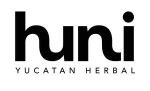

Trade Mark Journal No.2025/046 14 November 2025
UK00004289939 5 November 2025 (3)

- Class 3
- Body wash; Hair and body wash; Body washes; Body scrub; Body soap; Body lotion; Body shampoos; Body spray; Body cream soap; Lotions for face and body care; Body oils; Body cream; Body creams; Body deodorants; Face and body creams; Body mist; Body and facial oils; Body powder; Body gels; Body polish; Exfoliating scrubs for the body; Body milk; Body oil; Deodorants for body care; Moisturizing body lotions; Non-medicated body soaks; Body splash; Body massage oils; Scented body spray; Body oil spray; Soaps for body care; Body and facial butters; Hand and body butter; Body butters; Body mask cream; Body masks; Body mask powder; Body soufflé; Scented body lotions; Body emulsions; Body butter; Body scrubs; Face and body masks; Body milks; Moisturising body lotion [cosmetic]; Body fragrances; Body sprays [non-medicated]; Scented body creams; Body oils [for cosmetic use]; Sparkling fluid for the body; Body powder (Non-medicated -); Perfumed body lotions [toilet preparations]; Body and facial creams [cosmetics]; Hand washes; Body cream for cosmetic use; Body creams [cosmetics]; Creams (Non-medicated -) for the body; Beauty creams for body care; Body firming creams; Shampoo; Hair shampoo; Dandruff shampoo; Shampoos; Hair shampoos; Waterless shampoo; Non-medicated hair shampoos; Shampoo bars; Dry shampoos; Emollient shampoos; Hair lotion; Waterless shampoos; Shampoos for human hair; Hair conditioner; Non-medicated shampoos; Hair moisturising conditioners; Baby hair conditioner; Hair lotions; Hair moisturizers; Hair moisturisers; Hair conditioner bars; Deodorant soap; Soap (Deodorant -); Hair rinses; Hair gel; Hair rinses [shampoo-conditioners]; Hair conditioners; Hair styling lotions; Hair balm; Non-medicated hair lotions; Hair spray; Hair gels; Hair sprays; Cosmetic hair lotions; Mousses [toiletries] for use in styling the hair; Shower soap; Creams (Soap -) for use in washing; Hair emollients; Non-medicated balm for hair; Refill packs for shampoo dispensers; Hair bleach; Hair balms; Oils for hair conditioning; Hair pomades; Hair styling gel; Aloe soap; Hair serums; Bath lotion; Shaving lotion; Shaving soap; Hair care lotions; Conditioners for treating the hair; Hair tonic [non-medicated]; Hair balsam; Detergent soap; Hair mousse; Hair tonic; Hair tonic [for cosmetic use]; Hair styling gels; Styling gels for the hair; Hair texturizers; Hair creams; Hair oils; Hair styling spray; Styling sprays for the hair; Hair tonics; Antiperspirant soap; Soap (Antiperspirant -); Hair strengthening treatment lotions; Shaving soaps; Hair relaxers; Shower and bath gel; Shaving lotions; Bath and shower gel; Bath soap; Aftershave lotions; Aloe soaps; Hair care lotions [for cosmetic use]; Roll-on deodorants [toiletries]; Dandruff shampoos, not for medical purposes; After-shave gel; Conditioners in the form of sprays for the scalp; Hair tonics [for cosmetic use]; After-shave lotions; Hair-washing powder; Hair bleaches; Shower gel; Hair cream; Depilatory lotions; Gels for fixing hair; Bath and shower oils [non-medicated]; Soap products; Liquid bath soap; Toning lotion, for the face, body and hands; Cakes of soap for body washing; Facial wash; Face and body lotions; Body lotions; Body scrubs; Soap free washing emulsions for the body; Face wash; Exfoliating body scrub; Moisture body lotion; Body cleansing foams; Body sprays; Body moisturisers; Body mask lotion; Conditioners for use on the hair; Hair colourants; Hair dye; Skin conditioners; Conditioning preparations for the hair; Hair mousses; Cuticle conditioners; Hair oil; Hair nourishers; Dyes for the hair; Hair dyes; Hair wax; Hair styling waxes; Hair lacquers; Hair lacquer; Hair neutralizers; Hair powder; Hair care serums; Hair liquid; Styling paste for hair; Hair care serum; Hair protection mousse; Wax treatments for the hair; Hair color; Tints for the hair; Mousses being hair styling aids; Hair fixing oil; Beard oil; Oil baths for hair care; Facial oil; Shaving oil; Cuticle oil; Combing oil; Tea-tree oil; Hair liquids; Lavender oil; Massage oil; Bath oil; Cosmetic preparations for the hair and scalp; Baby oil; Suntanning oil [cosmetics]; Hair lighteners; Peppermint crude oil; Aromatherapy oil; Hair masks; Horse oil cream for skin care; Cleansing oil; Oils for the skin; Lavender oil for cosmetic use; Shaving oils; Bergamot oil; Rosemary oil for cosmetic use; Jasmine oil; Hair glazes; Pine oil; Hair glaze; Eucalyptus oil for cosmetic use; Sun tan oil; Perfumed oils for skin care; Rose oil; Hair care masks; Skin masks; Facial masks; Hairstyling masks; Skin moisturizer masks; Hair colouring; Hair protection lotions; Cleaning masks for the face; Skin make-up; Gel eye masks; Hair protection creams; Hair color removers; Hair colour removers; Facial makeup; Hand lotions; Hand lotion (Non-medicated -); Hand creams; Hand cream; Hand soap; Hand soaps; Hand cleansers; Hand gels; Cosmetic hand creams; Hand scrubs; Moist paper hand towels impregnated with a cosmetic lotion; Hand oils (Non-medicated -); Hand powders; Hand milks; Skin lotion; Facial lotion; Liquid soaps for hands and face; Scented body lotions and creams; Hand masks for skin care; Suntan lotion [cosmetics]; Hand cleaner; Hand cleaners [hand cleaning preparations]; Baby lotion; Day lotion; Refill packs for hand soap dispensers; Skin cleansing lotion; Eye Lotions; Skin lotions; Lotions for the skin; Moisturising creams, lotions and gels; Suntan lotions; Sunscreen lotions; Exfoliating scrubs for the hands; Cosmetic sun milk lotions; Moisturising skin lotions [cosmetic]; Moist wipes impregnated with a cosmetic lotion; Facial lotions; Non-medicated foot lotions; Cosmetic suntan lotions; Massage oils and lotions; Face creams; Face cream (Non-medicated -); Facial cream; Skin cream; Creamy face powder; Eye cream; Shaving cream; Lip cream; Face masks; Facial cream [for cosmetic use]; Sunscreen cream; Face powder [for cosmetic use]; Anti-wrinkle cream; Face scrub; Cosmetic white face powder; Skin cream [for cosmetic use]; Cold cream; Skin cleansing cream; Face powders; Face wipes; Anti-aging cream; Face powder (Non-medicated -); Face gels; Nail cream; Face packs [cosmetic]; Facial creams; Day cream; Face packs; Fair complexion cream; Exfoliating scrubs for the face; Cleansing cream; Shower cream; Base cream; Cuticle cream; Cosmetic creams for firming skin around eyes; Face oils; Face powders [for cosmetic use]; Cream foundation; Face paints; Bath cream; Pressed face powder; Anti-wrinkle cream [for cosmetic use]; Face dusting powders; Wrinkle resistant cream; Face scrubs (Non-medicated -); Cream soaps; Mattifying gel cream; Aftershave moisturising cream; Skin cleansing cream [non-medicated]; Night cream; Shaving creams; Nail conditioners; Lip conditioners; Conditioning balsam; Conditioning creams; Body deodorants [perfumery]; Non-medicated skin lotions; Beauty tonics for application to the body; Skin moisturizer; Milky lotions for skin care; Body emulsions for cosmetic use; Sun tan lotion; Body talcum powder; After-sun lotions; Skin moisturizers; Cleansing lotions; Non-medicated stimulating lotions for the skin; Skin moisturiser; Bathing lotions; Skin moisturisers; Beauty masks for hands; Loose face powder; Beauty masks; Hydrating masks; Cleansing masks; Face lifting stickers for cosmetic use; Foot masks for skin care; Cosmetic mud masks; Cosmetic masks; Face powder in the form of powder-coated paper; Beauty tonics for application to the face; Lip balm; Lip balms; Lip balm [non-medicated]; Lip balms [non-medicated]; Non-medicated lip balms; Lip gloss; Lip glosses; Shaving balm; Shave balm; Beard balm; Cleansing balm; Blemish balm creams; Lip protectors (Non-medicated -); Shaving balms; Baby bottom balm; Skin balms (Non-medicated -); Non-medicated skin balms; Aftershave balm; Foot balms (Non-medicated -); Moisturising skin creams [cosmetic]; Moisturizing creams; Cosmetic nourishing creams; Skin relief serum [cosmetic]; Moisturising gels [cosmetic]; Moisturising creams; Sun protectors for lips; Refill packs for skin care cream dispensers; Skin recovery creams [cosmetics]; Hydrating creams for cosmetic use; Cleansing creams [cosmetic]; Cosmetic creams for dry skin; Moisturizing preparations for the skin; Facial concealer; Skin care creams [cosmetic]; Cosmetic creams for skin care; Non-medicated scalp treatment cream; Eye wrinkle lotions; Cosmetic creams for the skin; Skin creams [cosmetic]; Skin moisturizers used as cosmetics; Skin creams [for cosmetic use]; Skin care lotions [cosmetic]; After-sun lotions [for cosmetic use]; Skin creams [non-medicated]; Non-medicated skin creams; Non-medicated cleansing creams; Facial butters; Facial moisturisers [cosmetic]; Gel scrub; Non-medicated skin serums. .
Huni Beauty Limited